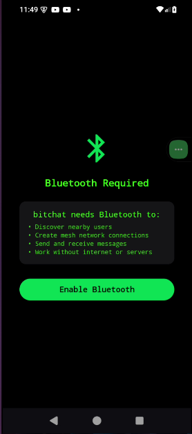

|
 |
 |
Se alinea con el manual al usar un lenguaje claro y directo ('Crear Cuenta') y seguir la paleta de colores y tipografía definida, asegurando coherencia desde el primer paso. |
Se simplificó la pantalla inicial, eliminando la opción de 'Iniciar Sesión' que generaba confusión y enfocando al usuario en una única acción: crear su cuenta. |
Los usuarios sugirieron que el propósito de la app no era claro al inicio. Se añadió un subtítulo ('Comunicación segura y sin límites') para dar contexto inmediato. |
Optimización: Se aumentó el contraste del texto del subtítulo a 4.8:1. El botón 'Crear Cuenta' ahora cumple con un área táctil de 48x48px y tiene un `aria-label` descriptivo. |
Optimización: Se usa un lenguaje neutro y universal ('Crear Cuenta') en lugar de jerga técnica. El diseño es limpio y no depende de referencias culturales específicas. |
Optimización: Se añadió el microcopy 'Es gratis y siempre lo será' para reducir la ansiedad sobre posibles costos. |
Optimización: El CTA principal ('Crear Cuenta') es prominente, con un color de alto contraste y ocupa un ancho considerable para ser fácilmente identificable. |
Optimización: El tono es directo y acogedor, con frases como 'Bienvenido a Bitchat' y un subtítulo que comunica el valor principal de la app. |
Optimización: Se presenta una única opción clara, eliminando la carga cognitiva de decidir entre iniciar sesión o registrarse en la primera pantalla. |
Optimización: Se utiliza el logo, la tipografía 'Inter' y la paleta de colores (morado principal) definidos en el sistema de diseño, creando coherencia con el resto de la app. |
Optimización: El flujo es lineal y predecible: la pantalla de bienvenida lleva directamente al primer paso del registro. No hay acciones reversibles en este punto. |
Optimización: El mensaje 'Bienvenido' y el subtítulo enfocado en los beneficios del usuario ('comunicación segura') generan una conexión empática desde el inicio. |
Optimización: Al tocar el botón, una animación sutil de feedback (cambio de opacidad) confirma la acción antes de pasar a la siguiente pantalla. |
 |
 |
 |
El manual especifica que los campos de texto deben tener etiquetas claras y visibles en todo momento. La versión final cumple con esto, a diferencia de la anterior que usaba placeholders. |
Se añadió un indicador de progreso ('Paso 1 de 4') para que el usuario sepa en qué parte del proceso se encuentra, una idea surgida para reducir la incertidumbre. |
Usuarios reportaron no saber qué tipo de nombre de usuario era válido. Se añadió un texto de ayuda: 'Solo letras, números y guiones bajos'. |
Optimización: Las etiquetas 'Nombre de usuario' y 'Contraseña' ahora son persistentes y tienen un `for` asociado al `id` del input. Los campos tienen `aria-describedby` para el texto de ayuda. |
Optimización: El campo 'Nombre de usuario' es una práctica común y entendible globalmente. No se piden datos personales sensibles en este paso. |
Optimización: El microcopy 'Elige un nombre único' bajo el campo guía al usuario sobre qué se espera que ingrese. |
Optimización: El botón 'Siguiente' está claramente etiquetado y se activa solo cuando los campos requeridos están completos, guiando al usuario. |
Optimización: El tono es conversacional y de guía ('Empecemos por lo básico'). El texto de ayuda es proactivo en lugar de esperar a que ocurra un error. |
Optimización: Se agrupan los campos lógicos (credenciales) y el indicador de progreso reduce la carga de memorizar en qué paso se está. |
Optimización: El estilo de los campos de texto (bordes, color de fondo, tipografía) y el botón 'Siguiente' es el mismo que se usa en otras partes de la app, como en la pantalla de búsqueda. |
Optimización: Se añade un botón de 'Atrás' (icono de flecha) que permite al usuario volver al paso anterior de forma segura y reversible. |
Optimización: En lugar de solo mostrar un campo, se contextualiza con 'Empecemos por lo básico', mostrando empatía con el proceso del usuario. |
Optimización: La validación del nombre de usuario se hace en tiempo real con un icono de check (✓) o cruz (✗), dando feedback inmediato. |
 |
 |
 |
Se sigue la directriz del manual de usuario de explicar por qué se solicita cada dato. Se añade un texto explicando el uso del correo para recuperación de cuenta. |
La idea de ofrecer 'login social' (Google, Apple) surgió en la lluvia de ideas para acelerar el registro y fue implementada en la versión final. |
Los usuarios expresaron preocupación por la privacidad de su correo. Se añadió un texto que aclara: 'No compartiremos tu email con nadie'. |
Optimización: Los botones de login social tienen `aria-label` ('Registrarse con Google') y un contraste adecuado. El campo de email está correctamente etiquetado. |
Optimización: Ofrecer múltiples métodos de registro (email, Google, Apple) es una práctica inclusiva que acomoda a usuarios con diferentes preferencias y necesidades. |
Optimización: El microcopy 'o' entre el formulario y los botones de login social es clave para indicar que son rutas alternativas. |
Optimización: Se diferencian visualmente los CTAs: el primario ('Siguiente') y los secundarios (botones de login social) para no abrumar al usuario. |
Optimización: El texto 'Tu seguridad es nuestra prioridad' y la explicación sobre el uso del email adoptan un tono tranquilizador y transparente. |
Optimización: La opción de login social reduce drásticamente la carga cognitiva al autocompletar el proceso de registro con un solo toque. |
Optimización: Los botones de Google y Apple usan sus logos y colores oficiales, manteniendo una consistencia visual externa que los usuarios ya reconocen. |
Optimización: El flujo permite al usuario elegir entre dos caminos (email o social) y puede revertir su elección volviendo atrás. |
Optimización: Reconocer la preocupación del usuario por su privacidad y abordarla proactivamente con un mensaje claro es un acto de empatía. |
Optimización: Al escribir un email con formato incorrecto, el borde del campo se vuelve rojo y aparece un mensaje de error debajo, dando feedback instantáneo. |
 |
 |
 |
El manual de voz y tono indica que la comunicación debe ser inspiradora. El '¡Casi listo!' y la personalización con el nombre de usuario siguen esta pauta. |
En la lluvia de ideas se propuso hacer el perfil más personal desde el inicio, por lo que se añadió la opción de subir una foto de perfil en este paso. |
La evaluación de usuario mostró que no quedaba claro si la foto de perfil era obligatoria. Se añadió el texto 'Opcional' para clarificarlo. |
Optimización: El área para subir foto tiene un `role="button"` y es operable por teclado. El texto tiene un contraste de 5.5:1 sobre el fondo. |
Optimización: Se ofrece un avatar genérico por defecto, lo que es inclusivo para quienes no desean compartir una foto personal. |
Optimización: El microcopy 'Toca para subir una foto' dentro del círculo es una instrucción clara y concisa. |
Optimización: Hay dos CTAs claros: 'Subir foto' (secundario) y 'Finalizar' (primario), con una jerarquía visual que guía hacia la finalización del flujo. |
Optimización: El uso del nombre de usuario (`¡Casi listo, {usuario}!`) personaliza la experiencia y crea un tono amigable y cercano. |
Optimización: Hacer la foto de perfil opcional reduce la presión y la carga cognitiva de tener que buscar y subir una imagen en ese momento. |
Optimización: El avatar por defecto, el botón 'Finalizar' y la tipografía son consistentes con los elementos que se verán después en la pantalla de perfil del usuario. |
Optimización: El usuario puede 'Omitir por ahora' este paso, lo que ofrece reversibilidad y flexibilidad en el flujo. |
Optimización: Felicitar al usuario ('¡Casi listo!') y personalizar el mensaje es una forma de comunicación empática que celebra su progreso. |
Optimización: Al subir una foto, esta aparece inmediatamente en el círculo, proveyendo un feedback visual instantáneo de que la acción fue exitosa. |
|  |
 |
 |
El manual de usuario indica que las pantallas de carga deben ser informativas. La versión final añade un texto que explica lo que está pasando ('Creando tu cuenta...'). |
Se propuso usar este tiempo de espera para reforzar el valor de la app. Por eso se añadió la frase 'Encriptando tu espacio seguro'. |
Los usuarios sentían que la app se había colgado en la pantalla de carga. Se cambió el spinner estático por una animación más dinámica y un texto explicativo. |
Optimización: Se usa un `role="status"` con `aria-live="polite"` para que los lectores de pantalla anuncien el texto 'Creando tu cuenta, esto puede tardar un momento'. |
Optimización: El lenguaje es neutro y el icono de carga es una animación abstracta, evitando referencias culturales que puedan no ser entendidas. |
Optimización: El microcopy 'Un momento...' establece una expectativa de tiempo realista y gestiona la espera del usuario. |
Optimización: No hay CTAs en esta pantalla, lo cual es correcto, ya que el usuario solo debe esperar a que el sistema complete una acción. |
Optimización: El tono es tranquilizador y refuerza la seguridad ('Encriptando tu espacio seguro'), convirtiendo una espera pasiva en una confirmación del valor de la app. |
Optimización: Al informar al usuario de lo que está sucediendo, se reduce la carga cognitiva de la incertidumbre y la ansiedad de la espera. |
Optimización: La animación de carga utiliza el color morado principal de la marca y la tipografía 'Inter', manteniendo la coherencia visual incluso en estados transitorios. |
Optimización: Este es un paso de sistema no reversible, pero el flujo está diseñado para llevar automáticamente al home una vez completado. |
Optimización: Comunicar lo que sucede en segundo plano ('Creando tu cuenta') muestra empatía por el tiempo y la incertidumbre del usuario. |
Optimización: La propia animación es un feedback constante de que el sistema está trabajando y no se ha colgado. |